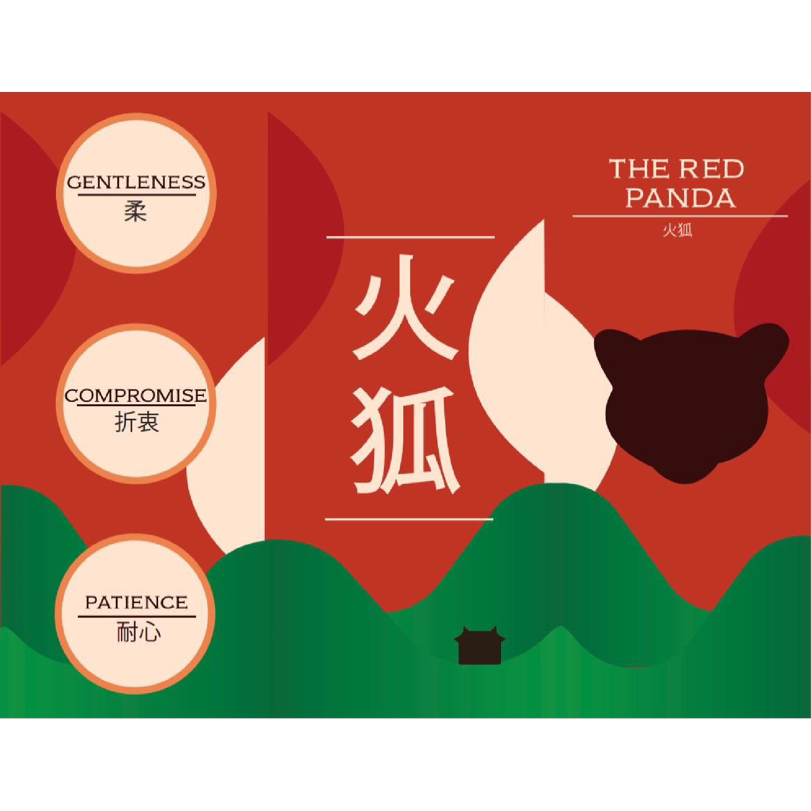
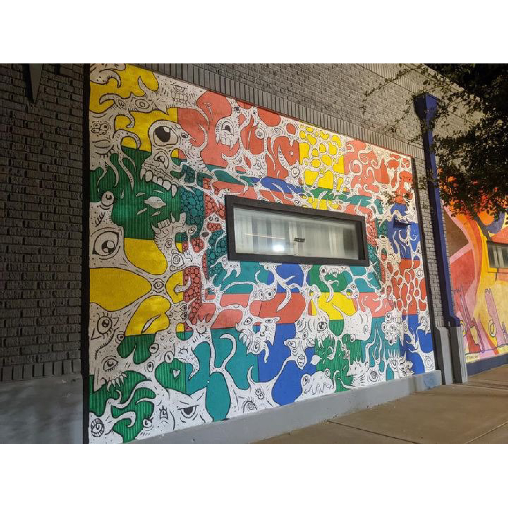
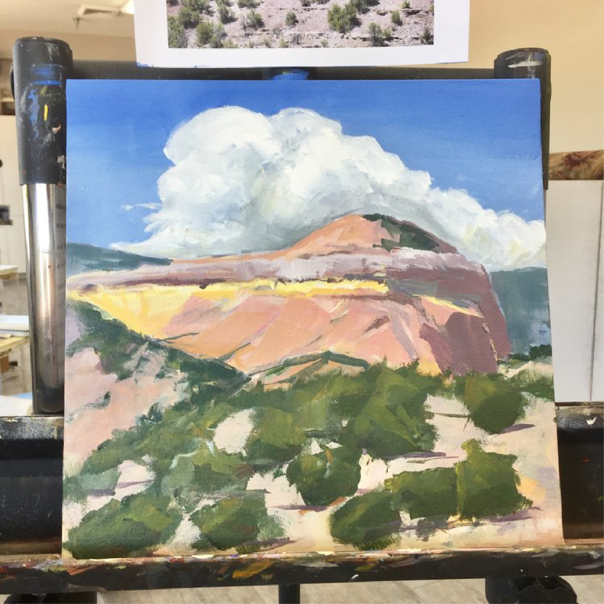
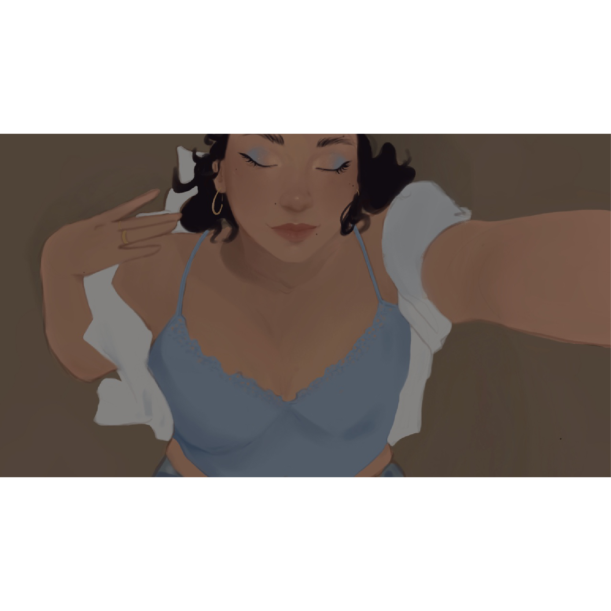

By: Aden Thompson
"For this I wanted to make something that feels alive all while keeping it simple. To achieve that I made the background a solid purple hue, but kept the vibrance and style from Miles Morales "Expectations" graffiti mural from "Into The Spider-Verse". This piece didn't have any purpose except I felt like drawing Spider-Man, but I'm glad I made this because it's one of my better projects."

By: Aden Thompson
"What I wanted to go for when making this was to make it look friendly but also catches your attention. Which is why I threw in the green gradient on the landscape. The clashing of the cool greens and warm reds bring the whole thing together. As for the text and other graphics, I put a graphic of the red panda to show what it looks like and gave a little overview of what the red panda represented. The text in the middle means "Firefox" a name given to the red panda by the Chinese.”

By: Buchanan Carr
"Made for the Hoodoo festival 2023. I had the idea to use a grid of squares to create a winding design of my character 'The Slush'. The concept evolved into creating a sort of optical illusion, so that the window would be the back of a long hallway.

By: Buchanan Carr
"Made for the love of bones and skeletons. A custom home piece for my new place. The paisley pattern was inspired from earrings Will Wood from Will Wood and the Tapeworms wore once. Fun thing about this piece is that it's fluorescent under blacklight."

By: Charlotte Rogers
"This painting was done as a gift to my dear friends in Tennessee who taught me so much. I went over to their house all the time and Kylie always greeted me.”

By: Charlotte Rogers
“This is one of my favorite projects because of how hard I worked on it. I did it in a painting class with my grandma so that was another reason why this painting is my favorite.”

By: Valerie Ramirez
“I completed this drawing while I was in the hospital for several weeks after a large part of my arm began swelling. Even after being told by doctors to stop using my hands to not exacerbate the swelling. I continued slowly working on portraits and photo studies. This is one of the pieces that I completed during this time. Although, I can no longer find the photographer of the original photograph this piece is based on, the photograph was retrieved from Pinterest.”

By: Valerie Ramirez
“This self portrait is really a celebration of my own growth and self appreciation over the years. I chose to use very pronounced blue hues that give a sense of tranquility and peace, reflecting my evolving understanding of myself. Through this art piece I hope to draw the viewer in with the softness of each brushstroke and to give a view into my personal growth through an artistic lens.”